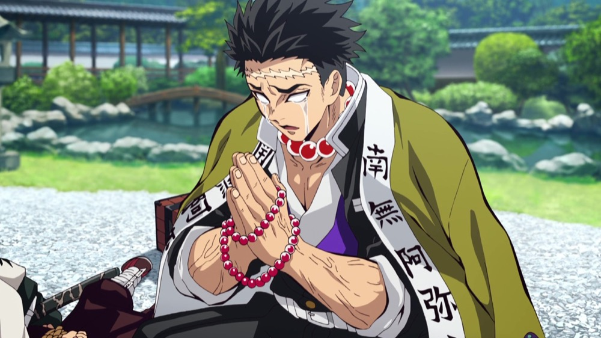

Camps
Demon
Les démons sont des humains dont le sang a fusionné avec celui de Muzan ce qui leur donne un pouvoir immense en fonction de la dose reçue. Le seul moyen de tuer un démon est d’utiliser le soleil ou lui trancher le cou avec un katana sinon peu importe les dégâts qu’il aura subi il ne mourra mais se regénèrera (Muzan lui peux tuer n’importe quel démon en leurs donnant une dose de sang très concentrée)
Les Douze Lunes Démoniaques sont les 12 combattants les plus forts parmi les démons, deuxièmes
en force et en autorité seulement devant le seigneur démon lui-même, Muzan Kibutsuji.
Chaque membre des Lunes a reçu une plus grande partie du sang de Muzan que les autres démons,
augmentant considérablement leurs pouvoirs.
Elles sont divisées en deux groupes, les Six Rangs Supérieurs, numérotés de un à six, et les Six Rangs Inférieurs, de six à douze. Le nombre signifie leur classement parmi les Lunes, déterminé par le niveau de force de chaque membre.
Pourfendeur
Heureusement les pourfendeurs de démons des puissants guerriers protègent les hommes des démons. Ils existent depuis la nuit des temps et opèrent dans l’ombre afin de ne pas inquiéter la population…
Rare sont ceux qui en ont vu ou qui en connaissent l’existence. L’armée est composée de soldats vaillants dont les Piliers, ce sont les 9 chasseurs de démon les plus puissants qui soutiennent les bases des pourfendeurs de démons. En effet, la plupart des bas rangs sont tués rapidement. Chaque pilier possède un Souffle différent qu'il a appris en s'entraînant
Ils sont dirigés par le chef des pourfendeurs de démon Kagawa Ubuyashiki, qui les réunis tous les 6 mois, ou en cas d'urgence. Une personne ordinaire, en s’entraînant durement, devient un Pilier en 5 ans mais les plus talentueux et ceux qui apprennent vite peuvent le devenir en 2 ans.